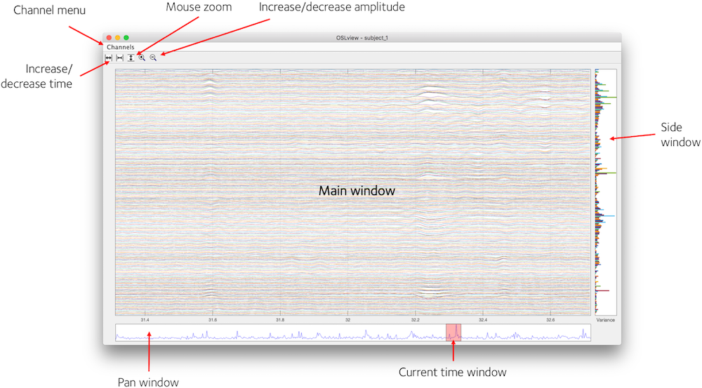
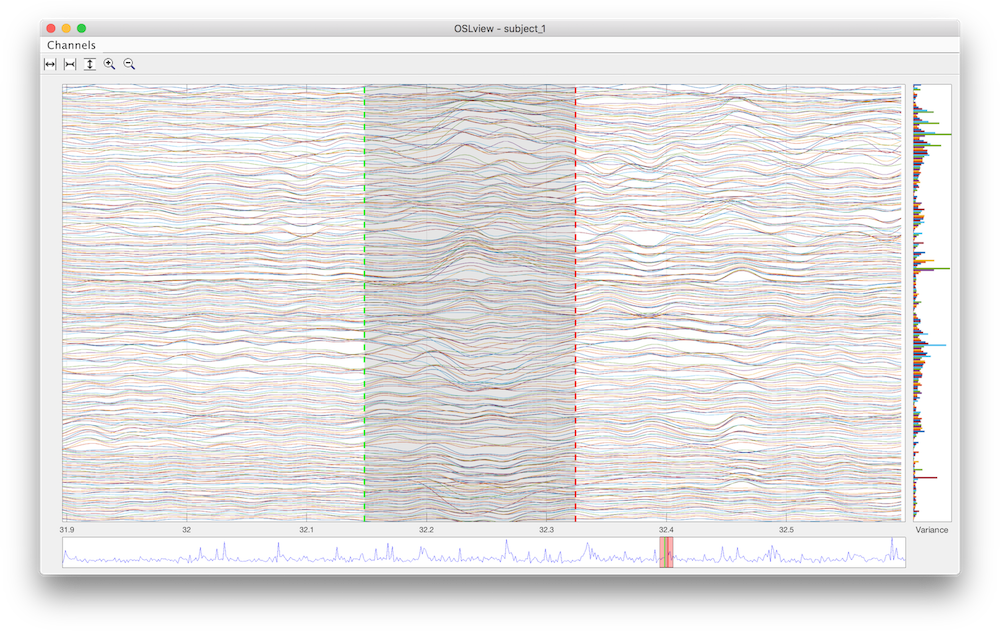

Contents
Utilities - oslview
OSLview is a tool for viewing continuous MEG data. Additionally, it allows interactive flagging of bad channels and time periods in format that is compatible with the OAT pipeline. OSLview may be run in Matlab by calling oslview(D) where D is an SPM MEEG object containing the continuous data.
D = spm_eeg_load(fullfile(osldir,'example_data','roinets_example','subject_1')); D = oslview(D);

Basic display
OSLview displays a time window of data from all channels for a particular sensor type. You can choose the sensor type from the 'Channels' menu. From left to right, the buttons on the top of the window are
- Increase time window (x-axis limits)
- Decrease time window
- Activate vertical zoom (drag mouse vertically in main window to zoom in, right click to zoom out)
- Increase signal amplitude
- Decrease signal amplitude
Summary Statistics
In addition to displaying the data in the main window, OSLview also displays summary statistics of the data in the Pan Window and Side Window. The Side Window shows the variance of each channel over all time points (right clicking this window brings up a context menu that allows this to be changed to kurtosis). The Pan Window shows the variance over all channels at each time point. These two displays are useful for identifying time points or channels with abnormally high variance that may be indicative of an artefact.
Flagging Bad Channels
OSLview can be used to flag channels or sections of the data, such that they may be excluded from subsequent analyses. A channel may be flagged as bad by right-clicking on the trace for that channel in the main window, or by right-clicking on the bar for the channel in the side window. The selected channel is highlighted and a context menu with the channel label will appear. Select "Set Channel as Bad" to flag this channel. The selected channel is now flagged as bad and is shown as a dashed trace. The Pan Window and Side Window should update since the variance statistics are recalculated with this channel removed.
Bad channels can be reverted to good by right clicking and selecting "Set Channel as Good" from the context menu.
Bad channels are assigned to the SPM MEEG object using the badchannel method.
Flagging Bad Segments
To flag a section of data as bad, (e.g. to exclude an artefact), first right click in the Main Window at a time point corresponding to the start of the section you wish to exclude. From the context menu, select "Mark Event" to define the start of this bad section.
The start of the bad section is shown as a green line in the Main Window and in the Pan Window. The end of the section is defined by repeating this process at a time point corresponding to the end of the section.
The end of the section is shown as a red line in the Main Window and in the Pan Window. Once the end section has been defined, the data is flagged as bad and the The Pan Window and Side Window will update to reflect the change in the variance statistics after recalculating with this section removed.

A section marked as bad may be made good again by right clicking within the section (between the green and red lines). The context menu will provide the option "Remove Event". Selecting this will unflag this section and the green and red lines will disappear.
Bad sections are saved to the SPM MEEG object as events of type "BadEpoch" using the events method.
Saving output
Changes to the MEEG object are performed in memory, and the modified MEEG object is returned when you close the oslview window. However, the changes are not automatically written to disk until you call D.save().